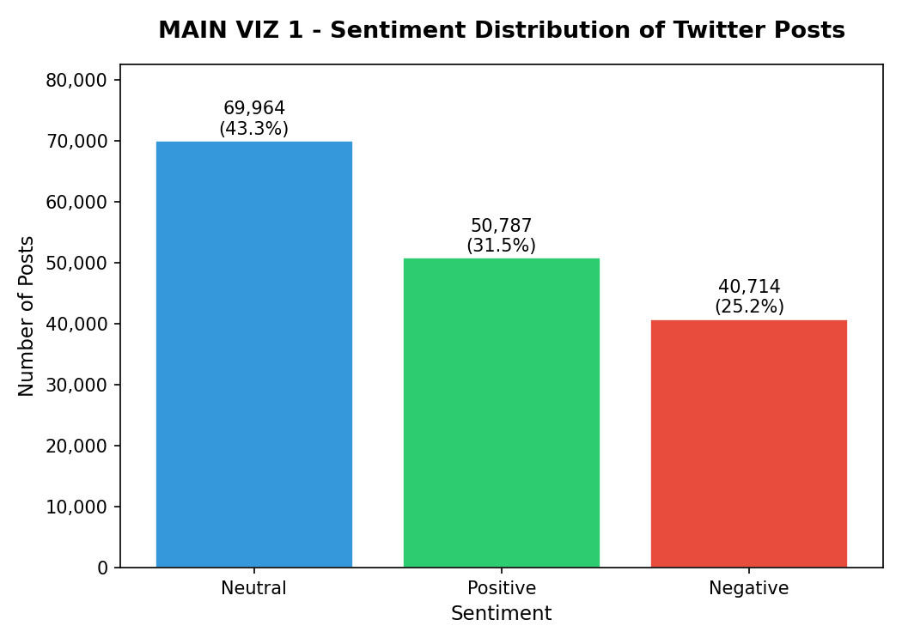
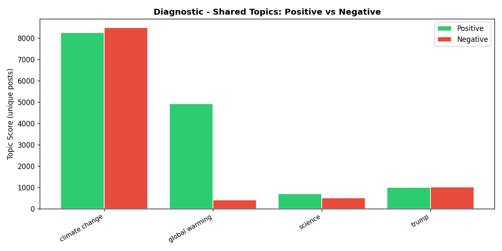
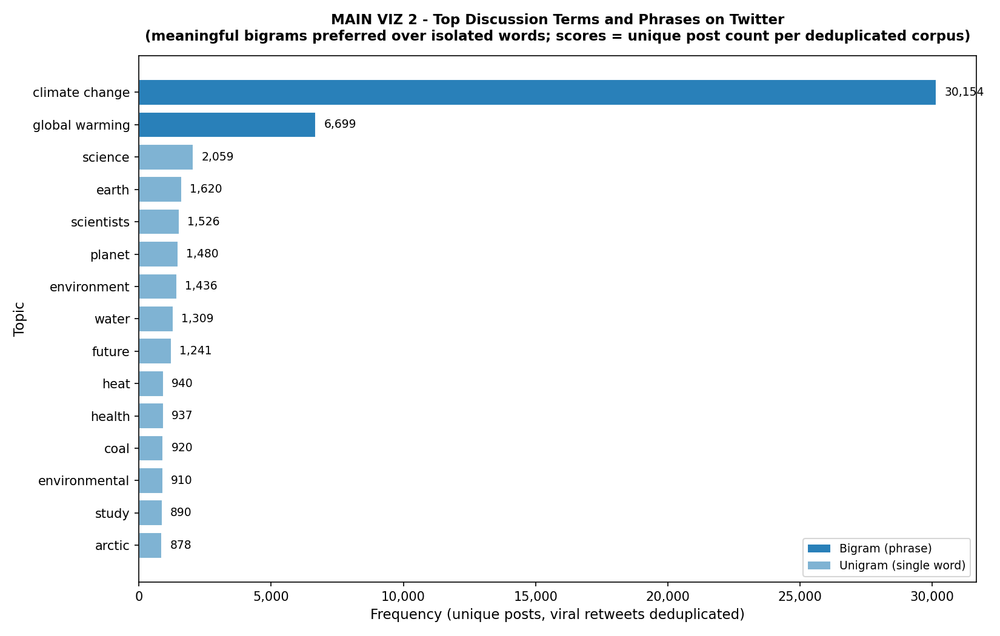
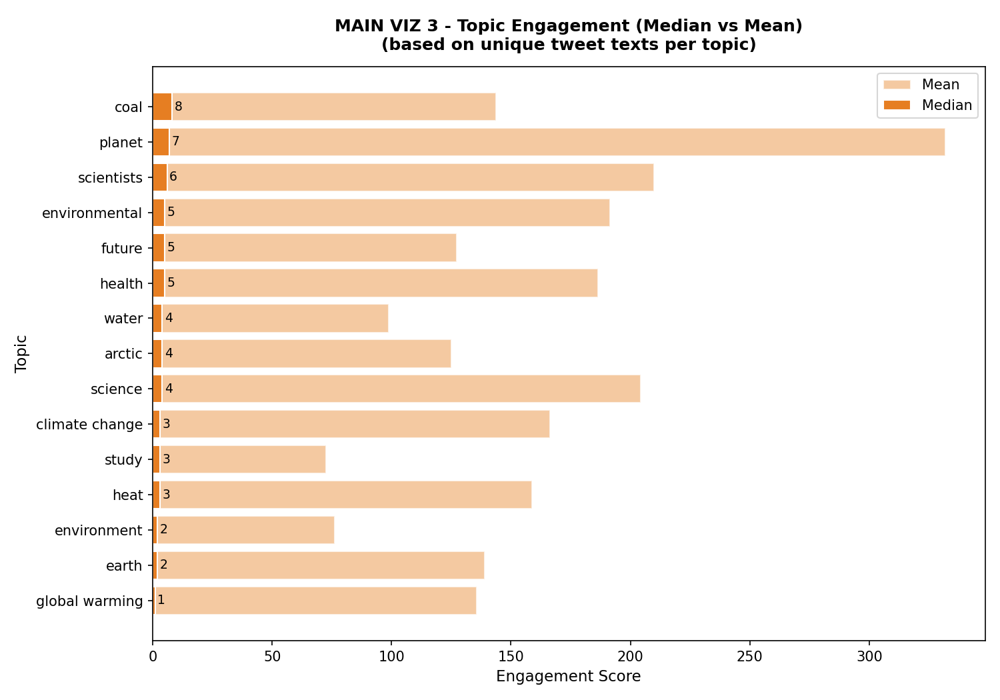
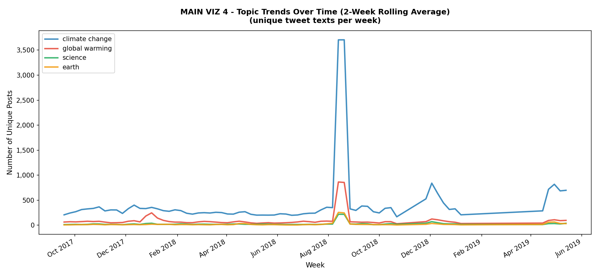
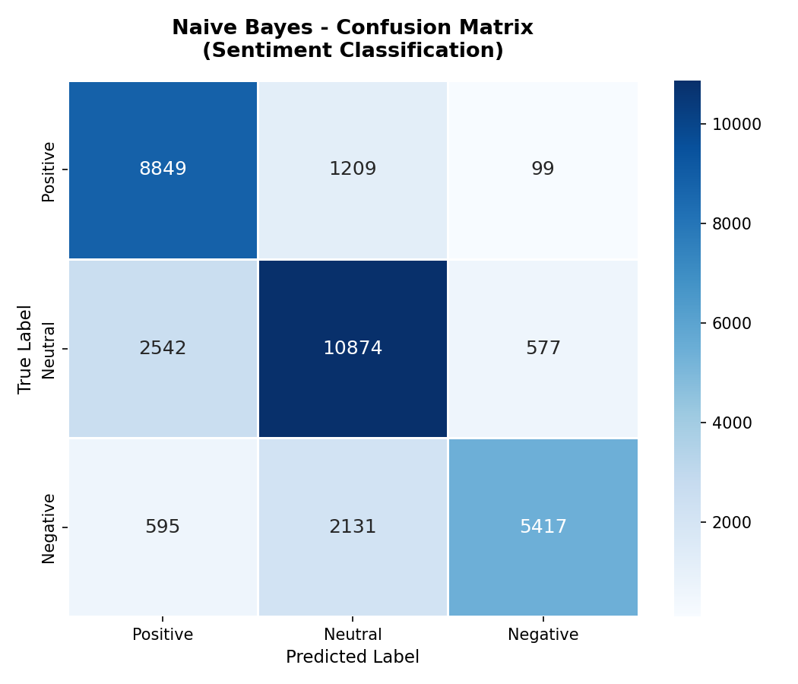

What Are People Talking About?
Analyze social-media conversations, sentiment, engagement and emerging discussion trends.
Overview
Clean Posts
161,465
Unique Texts
89,162
Neutral Sentiment
43.3%
Naive Bayes Accuracy
77.85%
Mean Engagement
2,808
Median Engagement
20
Max Engagement
169,247
Top Discussion Phrase
climate change
Top Phrase Frequency
30,154
Sentiment


Neutral: 43.3%
Positive: 31.5%
Negative: 25.2%
Topics

Top Discussion Terms and Phrases
- climate change
- global warming
- science
- earth
- scientists
- planet
- environment
- water
- future
- heat
- health
- coal
- environmental
- study
- arctic
Engagement

Highlights
coal
Median engagement = 8
planet
Median engagement = 7
scientists
Median engagement = 6
Mean engagement = 2,808 — Median = 20, indicating strong right-skew caused by highly engaged posts.
Trends

Observed surge (week of 2018-08-13)
- climate change: 7,073 posts — baseline 328 — z-score 139.02 — increase +2,056%
- global warming: 1,644 posts — baseline 78 — z-score 131.42
- science: 411 posts — baseline 19.8 — z-score 61.17
- earth: 467 posts — baseline 26.8 — z-score 28.56
These are observed unusual surges in discussion volume; no causal claims are made.
ML Model

Model results
Model: Multinomial Naive Bayes
Features: TF-IDF
Accuracy: 77.85%
Macro F1: 0.7771
Weighted F1: 0.7774
TF-IDF converts text into numerical features, while Multinomial Naive Bayes uses those features to classify sentiment.